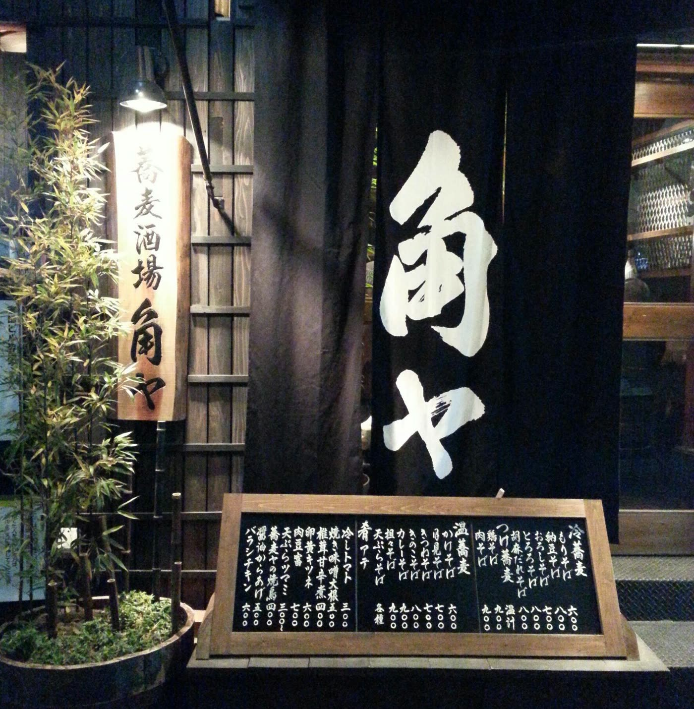

一、〆は蕎麦
飲んだあとの蕎麦は格別。あっさりのせいろから、ピリ辛でクリーミーな坦々出汁まで。その日の気分で。
 株式会社けいか堂飲料店Kadoya Group / Yushima, Tokyo
株式会社けいか堂飲料店Kadoya Group / Yushima, Tokyo
呑んで、つまんで、
蕎麦で〆る。
湯島天神の男坂を下りた路地に暖簾を掲げる「蕎麦酒場 角ヤ」。蕎麦屋で一杯、の楽しみを酒場のかたちにしました。照明を落とした店内に木のテーブルが並び、ハイボールや日本酒を片手に、揚げ物や小皿をつまむ。そして最後は、手繰る蕎麦で〆。深夜まで開いていますから、一軒目にも二軒目にも、ちょいと寄りやすい店です。

飲んだあとの蕎麦は格別。あっさりのせいろから、ピリ辛でクリーミーな坦々出汁まで。その日の気分で。

揚げ物、焼き物、小皿のアテ。角ハイボールや日本酒が進むメニューを揃えています。

湯島駅から2分。仕事帰りの一杯にも、はしご酒の〆にも。黒板の本日のおすすめをご覧ください。
| 店名 | 蕎麦酒場 角ヤ 湯島天神（ソバサカバ カドヤ） |
|---|---|
| 住所 | 〒113-0034 東京都文京区湯島3-36-8 |
| 電話 | 03-3831-8018 |
| 営業時間 | 月〜木・土 18:00〜翌3:00（L.O. 翌2:00） 金曜 18:00〜翌4:00（L.O. 翌3:00） |
| 定休日 | 日曜日 |
| お支払い | VISAMasterJCBAMEXDiners |
| 予算の目安 | 2,000〜3,000円 |
| アクセス | 東京メトロ千代田線 湯島駅 徒歩2分／湯島天神 男坂下すぐ |
| SNS・掲載 |
感染症の流行状況により、営業時間・定休日が記載と異なる場合がございます。ご来店時は事前に店舗にご確認ください。